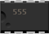
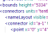

Fritzing PDK (Part Development Kit)
version 1.0
What’s in the PDK
Tools
The PDK contains some useful tools when creating your own parts. These tools are all little python scripts, so they can be easily adapted and modified to your use.
- DilPackageGenerator
A script that generates a whole part folder with images and partdescription.xml for DIL-Package IC chips.
 BreadboardGenerator
BreadboardGenerator
A script to create the complex partdescription.xml file for breadboards
- convertToHimetric
A simple script to calculate the himetric units from pixels
Artwork
All the design as vector art (.svg files) for the current basic set of parts. These files can be found in the Artwork folder.
The parts in the .svg files are designed following the default Fritzing resolution, 100ppi. Read more about what this means for measuring sizes and exporting the .svg as .png's in the Artwork Resolution Manifest.
On all of the artwork the Creative Commons BY: licence is applicable.
Guideline Document
A style guide to ensure consistency across parts (still to come)
Installation
All the PDK tools are Python scripts, so you need at least Python. To use the more complex generator scripts, you’ll need some extra python packages and things as well. Please check the following dependencies:
Requirements for convertToHimetric.py
- Python 2.3 or later
Available from http://python.org/download
Requirements for the BreadboardGenerator
- Python 2.3 or later
Available from http://python.org/download
- Cheetah (template language)
Download it from http://www.cheetahtemplate.org, follow the instructions and install it through
python setup.py installOr (if you have PEAK’s EasyInstall ) simply use easyinstall:
easy_install cheetah
Requirements for the DILPackageGenerator
- Python 2.3 or later
Available from http://python.org/download
- Cheetah (template language)
Read above where to get this from and how to install it
- PIL (Python Image Library)
Download it from http://www.pythonware.com/products/pil Windows users download the installer executable, Mac OS X and UNIX users download the source and install it through
python setup.py install. - ZLIB 1.1.4 or later. (needed for PIL to support PNG)
ZLIB is already installed on Mac OS X and comes standard with python for Windows, so you might not have to install this yourself.
But if PIL runs into troubles generating .png images, get it from http://www.zlib.net
- Font 04b_11
We ship this font in the PDK as a TrueType font
04B_11__.TTFin thefonts/04b_11folder. You need to install this font on your operating system using your standard method. - Java
We ship the Batik Rasterizer with our code (
batik-rasterizer.jar). This is an archived java binary that you can run when you have the Java Runtime Environment. Since you’re probably running Fritzing, we assume you already have Java, otherwise get it from http://java.com.